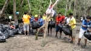
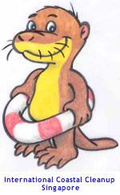
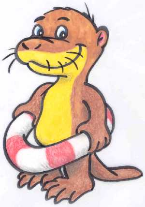

International
Coastal Cleanup, Singapore
International Coastal Cleanup, Singapore

Coordinated by:
The International Coastal Cleanup is coordinated in Singapore by Toddycats! - volunteers with the Lee Kong Chian Natural History Museum (formerly Raffles Museum of Biodiversity Research) at the National University of Singapore. We assign the sites so that everyone is working comfortably in their allocated area and the data is reliable, partner groups and organisations, conduct recces, help new organisers get started in their first year, recruit and train Site Buddies, and very importantly, collect, compile and verify data from organisers before submission to the international coordinators at Ocean Conservancy.
We also run the annual ICCS Workshop and ICCS Briefing and so have a busy calendar.
Most of us are veterans to the ICCS programme, with 5-13 years of service in various roles. And we don't let all our planning get in the way of us hitting the beaches and mangroves alongside volunteers every year, without fail.
ICCS Otters
- Coordinator: N. Sivasothi
- Dy Coordinator (Data): Airani S.
- Dy Coordinator (Manpower/YRCC): Joys Tan
- Blog/Webpage: N. Sivasothi
Zone Captains
- North West - Adriane Lee
- North West Dy - Germaine Leng
- Northeast - Yang Yi Yong
- Dy Northeast - Li Yufu
- Changi - Airani S
- Pulau Ubin - Tan Chia Wu
- Pulau Ubin Dy - Teo Kah Ming
- Tanah Merah - Joleen Chan
- East Coast - Johannah Wai
- South - Joys Tan
- South Dy - Lim Cheng Puay
